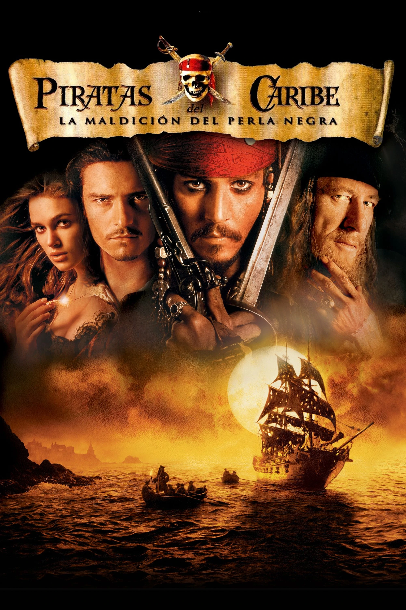
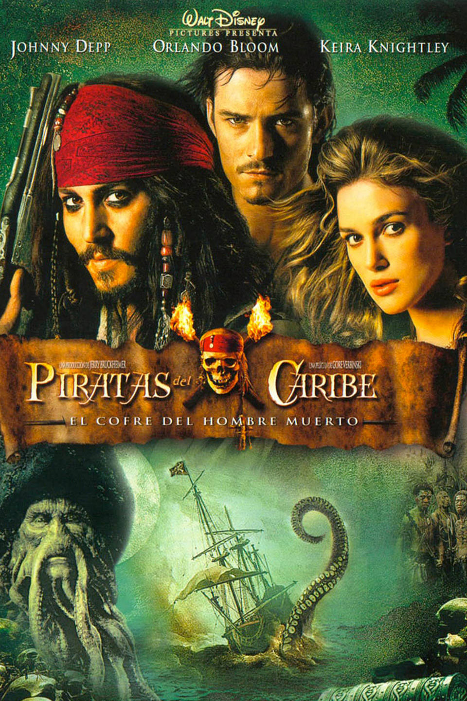
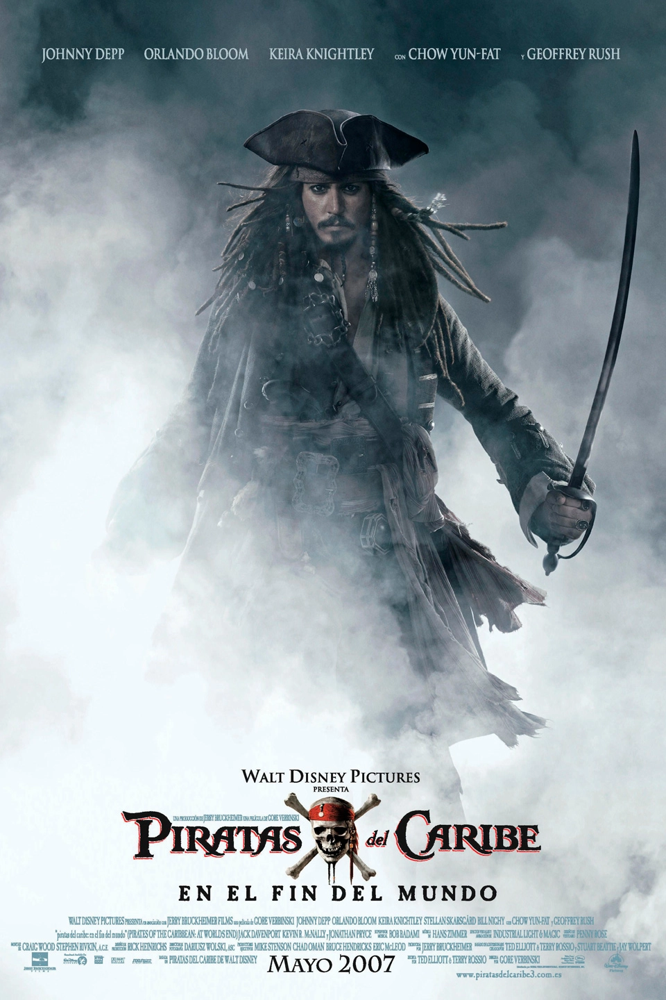

PIRATAS DEL CARIBE: LA MALDICIÓN DE LA PERLA NEGRA
12 de agosto de 2003 en cines / 2h 23min / Acción, Fantasía Dirigida por Gore Verbinski Guion Jay Wolpert, Stuart Beattie Título original Pirates of the Caribbean: The Curse of the Black Pearl. Película no recomendada a menores de 7 años
Sinopsis
En el mar Caribe, en el S. XVII, Jack Sparrow, de profesión pirata, ve tambalearse su vida idílica el día que su antiguo subordinado, el pérfido Barbossa, se amotina junto al resto de la tripulación y le roba su barco, la Perla Negra. Tiempo después, Sparrow llega a Port Royal, donde se topa con la hermosa hija del gobernador, Elizabeth Swann. Los acontecimientos se precipitan y, cuando Barbossa ataca por sorpresa la ciudad, Elizabeth es secuestrada. Will Turner, el herrero de la zona, y profundamente enamorado de ella, decide partir en su busca, y en su aventura cuenta con la ayuda del propio Sparrow, que ve una oportunidad para recuperar su preciada nave. Pero lo que tanto Sparrow como Will ignoran es que Barbossa y el resto de los piratas están malditos: cuando la Luna brilla se transforman en muertos vivientes. La clave para ponerle fin a su situación parece radicar en Elizabeth, y en su sangre...
Reparto
Johnny Depp (Jack Sparrow), Keira Knightley (Elizabeth Swann), Orlando Bloom (William Turner), Geoffrey Rush (Héctor Barbossa), Jack Davenport (James Norrington), Zoe Saldaña (Anamaria), Jonathan Pryce (Gobernador Weatherby Swann), Kevin McNally (Joshamee Gibbs)
Clacificaion de los usuarios 4.3/5
PIRATAS DEL CARIBE: EL COFRE DEL HOMBRE MUERTO
11 de agosto de 2006 en cines / 2h 31min / Aventura, Acción, Fantasía Dirigida por Gore Verbinski Guion Ted Elliott, Ted Elliott Título original Pirates of the Caribbean: Dead Man's Chest. Película no recomendada a menores de 7 años
Sinopsis
El siempre excéntrico pirata Jack Sparrow se enfrentará de manera súbita a su pasado. Hace trece años, Jack firmó un pacto con Davy Jones, el señor de los siete mares, cuyos tentáculos y espíritu maléfico no tienen rival. A cambio de su alma, Jones prometió a Sparrow la capitanía de la Perla Negra, pero Sparrow no tiene ninguna intención de darle su alma ya que esto significa que se convertiría en uno de los miembros de su tripulación maldita, un fantasma con un físico tan repulsivo como aterrador. Para evitar este futuro funesto, solo existe una solución: encontrar el cofre maldito de Jones donde guarda prisioneras las almas...
Reparto
Johnny Depp (Jack Sparrow), Keira Knightley (Elizabeth Swann), Orlando Bloom (William Turner), Geoffrey Rush (Héctor Barbossa), Jack Davenport (James Norrington), Jonathan Pryce (Gobernador Weatherby Swann), Kevin McNally (Joshamee Gibbs), Bill Nighy (Davy Jones), Naomie Harris (Calypso), Stellan Skarsgård (Bill Turner), Tom Hollander (Lord Cutler Beckett)
Clacificaion de los usuarios 4.6/5
PIRATAS DEL CARIBE: EN EL FIN DEL MUNDO
23 de mayo de 2007 en cines / 2h 49min / Aventura, Fantasía, Acción Dirigida por Gore Verbinski Guion Ted Elliott, Ted Elliott Título original Pirates of the Caribbean: At World's End. Película no recomendada a menores de 7 años
Sinopsis
La edad de oro de los piratas llega a su fin. Incluso el terrorífico barco fantasma y su capitán maldito Davy Jones están al servicio de Lord Cutler Beckett y la Compañía inglesa de las Indias orientales. El invencible Holandés Errante navega ahora los siete mares, masacrando sin piedad piratas de todo el mundo y destrozando sus naves. Will Turner, Elizabeth Swann y el Capitán Barbossa solo tienen una oportunidad de resistir a Beckett y a su ejército destructor: deben reunir a los Nueve Señores de la Hermandad Pirata, pero uno de sus miembros más importantes, el Capitán Jack Sparrow, no aparece. Will, Elizabeth y Barbossa, secundados por Tia Dalma, Pintel y Ragetti, deben izar velas hacia mares orientales desconocidos para enfrentarse a un pirata chino, el Capitán Sao Feng, y hacerse con los mapas que les conducirán más allá de los límites del mundo conocido, donde Jack está retenido...
Reparto
Johnny Depp (Jack Sparrow), Keira Knightley (Elizabeth Swann), Orlando Bloom (William Turner), Geoffrey Rush (Héctor Barbossa), Jack Davenport (James Norrington), Jonathan Pryce (Gobernador Weatherby Swann), Kevin McNally (Joshamee Gibbs), Bill Nighy (Davy Jones), Naomie Harris (Calypso), Stellan Skarsgård (Bill Turner), Tom Hollander (Lord Cutler Beckett), Keith Richards (Teague Sparrow),Chow Yun-fat (Sao Feng)
Clasificacion de los usuarios 4.9/5
PIRATAS DEL CARIBE: EN MAREAS MISTERIOSAS
20 de mayo de 2011 en cines / 2h 16min / Aventura, Comedia, Fantasía Dirigida por Rob Marshall Guion Tim Powers, Jay Wolpert Título original Pirates of the Caribbean: On Stranger Tides. Película no recomendada a menores de 7 años
Sinopsis
Johnny Depp vuelve a ponerse una vez más en la piel del pirata Jack Sparrow en esta divertida aventura que le llevará en busca de la legendaria Fuente de la Juventud. Sparrow se dará de bruces con una mujer que conoció en el pasado (Penélope Cruz), lo que le hará preguntarse si realmente le busca a él o a la fortuna que el alocado y excéntrico capitán está persiguiendo. Será entonces cuando capturados por el temible capitán Barbanegra (Ian McShane) se ven obligados a unirse a la tripulación del legendario Queen Anne’s Revenge e ir en busca de uno de los tesoros más preciados de la historia de la piratería.
Reparto
Johnny Depp (Jack Sparrow), Geoffrey Rush (Héctor Barbossa), Kevin McNally (Joshamee Gibbs), Keith Richards (Teague Sparrow),Penélope Cruz (Angélica Teach), Ian McShane (Barbanegra), Sam Claflin (Philip Swift),Àstrid Bergès-Frisbey (Syrena)
Clasificacion de los usuarios 3.9/5
PIRATAS DEL CARIBE: LA VENGANZA DE SALAZAR
25 de mayo de 2017 en cines / 2h 09min / Aventura, Fantasía, Acción Dirigida por Joachim Rønning, Espen Sandberg Guion Jeff Nathanson, Jeff Nathanson Título original Pirates of the Caribbean: Dead Men Tell No Tales. Película no recomendada a menores de 12 años
Sinopsis
Esta vez, el pirata más excéntrico del cine, el Capitán Jack Sparrow (Johnny Depp), no podrá escapar de su destino tan fácilmente. En su camino se cruzará un peligroso villano, Salazar (Javier Bardem), un Capitán que junto a su tripulación acaban de escapar del temible Triángulo del Diablo. El único propósito de Salazar será matar a cada pirata que se cruce en su camino y, especialmente, acabar con el resbaladizo Jack Sparrow. Para escapar de Salazar, Jack tendrá que hacerse con el Tridente de Poseidón y, para encontrarlo, tendrá que forjar una alianza con la astrónoma Carina Smyth (Kaya Scodelario) y con Henry Turner (Brenton Thwaites), un soldado de la Marina Real. Además, en esta nueva aventura Jack se reencontrará con su antiguo compañero Will Turner (Orlando Bloom). ¿Descubrirán todos ellos qué es lo que motiva tanto odio de Salazar hacia Jack?
Reparto
Johnny Depp (Jack Sparrow), Keira Knightley (Elizabeth Swann), Orlando Bloom (William Turner), Geoffrey Rush (Héctor Barbossa), Kevin McNally (Joshamee Gibbs), Kaya Scodelario (Carina Smyth), Javier Bardem (Capitán Salazar), Brenton Thwaites (Henry)